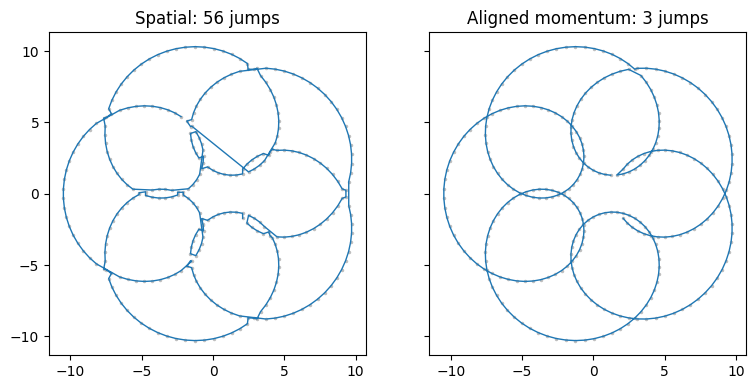

The local-flow walk#
The local-flow walk orders samples by following the velocity field from a start
point, one step at a time. It is the algorithm of Nibauer et al. (2022), and
LocalFlowOrderer runs it. Use the local-flow walk
shows how to set it up.
The walk#
The walk only needs a way to score how close each candidate point is to the current one. From the start point it repeats four steps:
Score every unvisited point against the current point with the distance metric.
Pick the point with the lowest score.
Step to it and mark it visited.
Stop if a termination condition holds.
The metric is pluggable, so the same walk can follow the flow, ignore velocities, or use a distance you write yourself (Write a custom metric).
The default metric#
The default, AlignedMomentumDistanceMetric, is the
“nearest neighbours with momentum” (NN+p) metric. It combines distance with a penalty
for stepping away from the direction of travel:
\(d_0 = \lVert \mathbf{q}_{\text{candidate}} - \mathbf{q}_{\text{current}} \rVert\) is the distance in position.
\(\cos\theta = \hat{\mathbf{u}} \cdot \hat{\mathbf{v}}\) is the cosine of the angle between the current point’s velocity \(\hat{\mathbf{v}}\) and the direction \(\hat{\mathbf{u}} = (\mathbf{q}_{\text{candidate}} - \mathbf{q}_{\text{current}}) / d_0\) to the candidate.
\(\lambda \ge 0\) is
metric_scale.
A candidate straight ahead costs nothing extra, one at right angles costs \(\lambda\), and one straight behind costs \(2\lambda\). So the walk favours points that are close and roughly ahead of it, but a much closer point off to the side can still win.
\(\lambda\) is a length, so its effect depends on the spacing \(s\) between neighbouring points. At \(\lambda = 0\) the walk is a plain nearest-neighbour search. At \(\lambda = s\), a neighbour at \(90°\) and distance \(s\) costs \(2s\), the same as a point straight ahead at \(2s\). As \(\lambda\) grows, direction dominates and the walk takes longer strides along the flow, skipping points off to the side. For a thin stream that is often what you want, since the autoencoder can order the skipped points afterwards (The autoencoder).
For a stellar stream the penalty encodes that member stars follow coherent orbits: the next star along the stream is likely to be close and to lie in the direction the stream is moving.
The other metrics#
FullPhaseSpaceDistanceMetric is the Euclidean distance
in phase space,
where \(d_v\) is the distance in velocity and \(\tau\), the metric_scale, is a time that
converts velocity into position units. If positions are in kpc and velocities in
kpc/Myr, \(\tau\) in Myr makes the phase space uniformly scaled. It treats all
directions alike, with no preference for the direction of travel.
SpatialDistanceMetric is the distance in position,
\(d = d_0\), and ignores velocity and metric_scale. The default metric with
\(\lambda = 0\) gives the same result.
Metric |
Uses position |
Uses velocity |
|
|---|---|---|---|
|
yes |
no |
ignored |
|
yes |
its direction |
a length: the penalty for a right-angle step |
|
yes |
its magnitude and direction |
a time: converts velocity to position units |
The MST’s opt-in velocity options reuse the same alignment idea, applied to the cosine \(\cos(v_i, v_j)\) between two samples’ velocities on each graph edge (The MST backbone).
Why velocities matter where a curve crosses itself#
The metrics differ most where a curve crosses itself. At a crossing the nearest point is often on the other branch, and only a metric that uses velocity keeps the walk on its own branch. An epitrochoid crosses itself many times:
import jax.numpy as jnp
import matplotlib.pyplot as plt
import phasecurvefit as pcf
from phasecurvefit.metrics import AlignedMomentumDistanceMetric, SpatialDistanceMetric
# An epitrochoid, stored in order along t, with an open 10-degree gap
t = jnp.linspace(jnp.deg2rad(5), jnp.deg2rad(355), 300)
R, r, d = 5.0, 1.0, 4.5
k = (R + r) / r
pos = {
"x": (R + r) * jnp.cos(t) - d * jnp.cos(k * t),
"y": (R + r) * jnp.sin(t) - d * jnp.sin(k * t),
}
vel = {
"x": -(R + r) * jnp.sin(t) + d * k * jnp.sin(k * t),
"y": (R + r) * jnp.cos(t) - d * k * jnp.cos(k * t),
}
# metric_scale is about 20 times the point spacing (~0.57) for the momentum
# metric, and ignored by the spatial one.
metrics = {
"Spatial": (SpatialDistanceMetric(), 0.0),
"Aligned momentum": (AlignedMomentumDistanceMetric(), 12.0),
}
fig, axs = plt.subplots(1, 2, figsize=(9, 4.5), sharex=True, sharey=True)
for ax, (name, (metric, scale)) in zip(axs, metrics.items()):
config = pcf.WalkConfig(metric=metric)
result = pcf.order(
pos,
vel,
pcf.orderers.LocalFlowOrderer(config=config, start_idx=0, metric_scale=scale),
)
# Steps that jump more than 5 places along the true curve
n_jumps = int(jnp.sum(jnp.abs(jnp.diff(result.ordering)) > 5))
print(f"{name}: {n_jumps} jumps between branches")
ordered_pos, _ = pcf.order_w(result)
ax.plot(pos["x"], pos["y"], ".", c="0.75", ms=3)
ax.plot(ordered_pos["x"], ordered_pos["y"], lw=1)
ax.set(title=f"{name}: {n_jumps} jumps", aspect="equal")
Spatial: 56 jumps between branches
Aligned momentum: 3 jumps between branches

The spatial walk cuts across the crossings, and the momentum walk follows the loops.
Stopping#
The walk stops when no unvisited point remains, or earlier when one of its stopping
conditions holds: the next step would be longer than max_dist in position, the walk
reached one of terminate_indices, or it has taken n_max points. Points it never
reaches are reported as skipped, with -1 in the padded indices.
In pseudocode:
visited ← {start}; order ← [start]; current ← start
while len(order) < n_max and current ∉ terminate_indices:
score[i] ← metric(current, i) for every unvisited i
best ← argmin(score)
if no unvisited point remains: stop
if spatial distance from current to best > max_dist: stop # a gap
append best to order; mark best visited; current ← best
skipped ← every point not visited
Walking backwards and both ways#
direction="backward" negates the velocities, which is the same as reversing time,
so the walk traces the flow in the opposite direction. direction="both" runs a
forward and a backward walk from the same start and joins them with
combine_results(), so the ordering runs from the backward end,
through the start, to the forward end. That suits a stream flowing away from a central
progenitor in both directions.
Because the walk follows the flow, it needs a start point at an end of the curve, or at the progenitor for a stream that flows both ways. When no start point is known, the MST orders the curve without one (The MST backbone).
References#
Nibauer, J., Belokurov, V., Cranmer, M., Goodman, J., & Ho, S. (2022). “Charting Galactic Accelerations with Stellar Streams and Machine Learning.” ApJ 940, 22. arXiv:2205.11767, doi:10.3847/1538-4357/ac93ee.